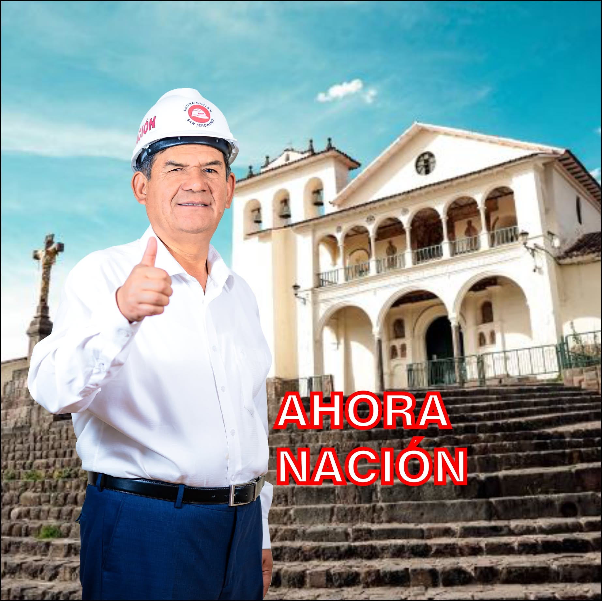

Candidato de Ahora Nación a la Alcaldía Distrital de San Jerónimo (Cusco) · Elecciones del 4 de octubre de 2026
«El que no mide, no gobierna: vengo con los números de San Jerónimo en la mano.»
Versión mitin (8–9 min) con cada cifra respaldada por su fuente oficial: anemia, seguridad, ejecución, Vinocanchón, transporte.
Los ejes del Plan de Gobierno 2027-2030 de Ahora Nación con el dato que los sustenta y la competencia legal del alcalde distrital.
Mapa interactivo de los 8 distritos de la provincia del Cusco: electores, anemia, seguridad, servicios, ejecución — y los 14 locales de votación de San Jerónimo.
Discurso en PDF, Plan de Gobierno inscrito en el JNE y bases de datos por distrito y centro poblado. Se van acumulando.
Hoy 63 de cada 100 niños de 6 a 35 meses tienen anemia (SIEN 2021); el departamento sigue en 53,8 % (ENDES 2024).
Hoy hay 1 policía por cada 956 vecinos — el peor ratio de la provincia — con una sola comisaría.
En 2021 quedaron S/ 15,2 millones sin ejecutar. Compromiso: ejecutar más del 90 % cada año, con tablero público.
Sitio de trabajo del candidato y su equipo. Se actualiza con cada documento nuevo. Última actualización: 23 de agosto de 2026.